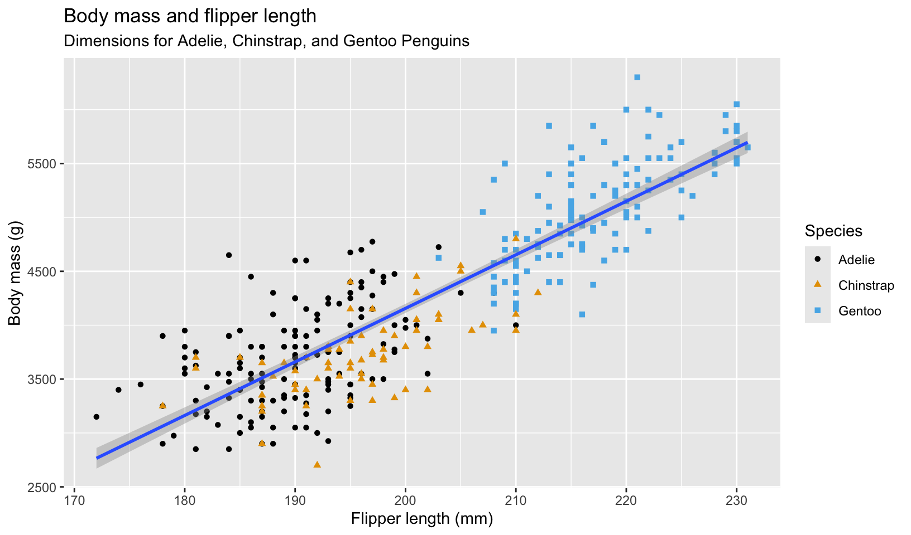

library(palmerpenguins)
library(ggplot2)
library(ggthemes)
library(cranlogs)
library(dplyr)R Books
reading
An actively maintained and curated list of R Books and other recommended resources from my reading list.
Libraries
Libraries used in this notebook.
Getting Started
Books and resources I recommend for learning R.
R for Data Science
R for Data Science (2e) - Second Edition of Hadley Wickham’s introductory book on R and exploratory data analysis. The book contains example code and exercises in most chapters. I used the first edition as my primary source when I was first learning R, and still recommend the book for beginners who want to learn R. The book teaches the basics of using tidyverse R1 for exploratory data analysis and visualization. A companion book provides suggested solutions to the exercises.
Sample visualization from the first chapter:
# visualization from https://r4ds.hadley.nz/data-visualize#first-steps
ggplot(
data = penguins,
mapping = aes(x = flipper_length_mm, y = body_mass_g)
) +
geom_point(aes(color = species, shape = species)) +
geom_smooth(method = "lm") +
labs(
title = "Body mass and flipper length",
subtitle = "Dimensions for Adelie, Chinstrap, and Gentoo Penguins",
x = "Flipper length (mm)", y = "Body mass (g)",
color = "Species", shape = "Species"
) +
scale_color_colorblind()
Resources
In addition to R for Data Science, I recommend the following resources for new R users:
- The R Graph Gallery - library of charts made with R and ggplot2
- Packages for writing better code:
- Style guides for writing better code:
- tidyverse style guide - implemented by styler
- Google’s R Style Guide - a fork of the tidyverse guide
rdev, my personalized collection of R development tools, includes all three of these packages and more, along with my own style guide and R environment setup instructions.
Additional Reading
Books I read to improve my knowledge of R.
- R Packages (2e) - the second edition of Hadley Wickham’s book on writing R packages, which I used to build rdev
- Advanced R - the second edition of Hadley’s book on R programming, which explains the R language (the first edition uses more base R than the second edition)
- Advanced R Solutions - solutions to exercises from Advanced R
- ggplot2: Elegant Graphics for Data Analysis (3e) - the third edition of Hadley’s book on his implementation of Leland Wilkinson’s Grammar of Graphics
- Solutions to ggplot2: Elegant Graphics for Data Analysis - solutions to exercises from ggplot2
My own notes and solutions to the Advanced R and ggplot2 exercises are available on this site.
raps-with-r
Building reproducible analytical pipelines with R - the stated goal of the book is to improve the reproducibility of data analysis. I don’t recommend this book. Section 1 is a reasonably good introduction to git and GitHub, but introduces trunk-based development without covering linear commit history. Section 2 provides some good advice, but much that I disagree with, including inline use of knitr::knit_child to automate creation of sections (which break the notebook workflow) and fusen to create packages from .Rmd files, which I found to create extra work with no clear benefits over using and/or extending the standard package layout like vertical or my own layout from rdev. (Interestingly, the author of vertical is also switching to Quarto for reproducible research and analysis) I also found the code examples to be inconsistent and a bit clunky.
Chapter 12 gives recommendations on testing: unit testing with some basic examples, assertive programming, Test-Driven Development (TDD), and test coverage. It suggests three packages for R assertions: assertthat, chk, and checkmate. Both chk and checkmate are designed to check function arguments; of the two, checkmate appears to be more robust and built to address the downside of R being a dynamically typed language.
For data validation, I currently use stopifnot(), although I may switch to either assertr or validate, which are both popular packages. I validate function arguments using manual checks, but checkmate looks appealing as a way to write more succinct code. Total downloads for the assertr, validate, chk, and checkmate packages for the last month are listed below:
cran_downloads(
packages = c("assertr", "validate", "chk", "checkmate"),
when = "last-month"
) |>
group_by(package) |>
summarize(downloads = sum(count), as_of = max(date))# A tibble: 4 × 3
package downloads as_of
<chr> <dbl> <date>
1 assertr 1627 2023-11-21
2 checkmate 300487 2023-11-21
3 chk 15996 2023-11-21
4 validate 2025 2023-11-21Chapter 13 introduces targets, “a Make-like pipeline tool for statistics and data science in R.” Conceptually, targets is very similar to an R Notebook, but like Make, will skip components that are up to date, and can run targets in parallel to speed up builds. targets can also render R Markdown documents using the tarchetypes package. I found the example target pipeline in the book convoluted and didn’t attempt to follow it. The targets manual explains that it implements two kinds of literate programming:
- A literate programming source document (or Quarto project) that renders inside an individual target. Here, you define a special kind of target that runs a lightweight R Markdown report which depends on upstream targets.
- Target Markdown, an overarching system in which one or more Quarto or R Markdown files write the _targets.R file and encapsulate the pipeline.
Of these two types, the second is a better fit with my preferred workflow: including multiple self-contained notebooks in a single repository. From the appendix, the design of Target Markdown supports both interactive development using notebooks and running a pipeline non-interactively when rendering the final document. For my work, targets doesn’t offer significant advantages over using R Markdown and Quarto - the only slowdown I typically encounter is when building a site with many notebooks, which the Quarto freeze option handles by only re-rendering documents when the source file changes. (I’m not performing the large, complex computations that targets is designed for)
Chapter 14 covers Docker, and asserts that it is necessary for reproducibility. While using Docker ensures a stable operating system environment, I think the book overstates the case for reproducibility, citing a single example where the operating system changed the results of an analysis because the scripts relied on OS file ordering. Much like use of targets, Docker would be most useful for projects with complex development environments shared across teams, but much of the benefits can be achieved using other approaches, like using OS-independent code. The chapter also encourages using a “frozen” development environment that is updated on a fixed schedule to minimize the impact of frequent updates. This is exactly the opposite of the modern DevOps approach - the issues created by small, frequent updates are smaller and easier to address than the more complex problems created by large upgrades. I always start development by updating packages to the latest production release - while this sometimes introduces issues, they are typically easy to fix, and prioritizing maintenance first improves quality and security.
An alternate approach to using Docker is to leverage GitHub Actions, which provides on-demand virtual machines that can be used to consistently test, build, and deploy code. The Tidyverse community provides a library of GitHub Actions for R, which I’ve customized for rdev. In fact, chapter 15 covers use of GitHub Actions using r-lib and presents them as a potential alternative for Docker.
Overall, I do follow the book’s core recommendations for reproducibility:
- Use version control extensively
- Use trunk-based development
- Adopt functional programming and DRY
- Use R Markdown which embeds analysis code and code output directly into the written report
- Use renv to manage dependencies
- Package all R code and publish using GitHub Pages
- Write unit tests using testthat
- Use assertions to validate function arguments and imported data
- Check test coverage using
covr - Use automated builds (but using Quarto instead of targets)
I would consider use of targets and Docker for larger, more complex, or long-lived projects, but I found that fusen offered no clear benefits and wouldn’t recommend its use. I think the biggest lesson I took from the book was to follow DRY a bit more strictly than I currently do, and use more functions, tests, and assertions in my analysis code.
The book does reference some interesting reading I’ve added to my list:
- John M. Chambers. “Object-Oriented Programming, Functional Programming and R.” Statist. Sci. 29 (2) 167 - 180, May 2014. https://doi.org/10.1214/13-STS452
- Trunk-Based Development And Branch By Abstraction
While reading the book, I discovered some interesting additional resources:
- Vertical, a “an R-based structured workflow for creating and sharing research assets in the form of an extended R package”, which I plan to review and compare to rdev
- Four ways to write assertion checks in R - an article on four methods for writing assertions in R:
- Use
stopifnot()from base R - Use the
assertthatpackage (last updated March 2019) - Use the
assertivepackage (last updated July 2020) - Use the
assertrpackage for data assertions, which works especially well for assertion checks against data frames used in data analysis
- Use
- I also revisited the
validatepackage, a data validation rules engine, which includes the Data Validation Cookbook (in Future Reading)
Future Reading
R books on my reading list.
- R Markdown: The Definitive Guide - written by the author of knitr
- R Markdown Cookbook - the follow-up to The Definitive Guide
- The Data Validation Cookbook - a book on the R validate package
- Discovering Statistics Using R - recommended to me as an introduction to statistics using R
R Dialects
An explanatory note on the R dialects of base R and tidyverse R.
The R programming language is over 30 years old and has a large number of packages (R libraries) that extend R. Unlike python (a general purpose language), R was designed specifically for analysis, visualization, and statistical modeling, which is why I chose R for data analysis: it has built-in support for data structures like data frames (implemented in python using pandas), vectors, packages for just about any statistical tool you’d need, and of course, ggplot2. In fairness, python is more popular, more robust, and a better tool for some tasks, like data acquisition and machine learning (which were not priorities for my use).
Like many human languages, R has developed two distinct dialects: base R and tidyverse R. Base R consists of the packages included in the R distribution (base, compiler, datasets, graphics, grDevices, grid, methods, parallel, splines, stats, stats4, tcltk, tools, utils), and the Tidyverse is a collection of packages that implement a domain-specific language for data analysis, originally created by Hadley Wickham.
In my experience, tidyverse R is better for data analysis, where base R is better for writing packages - tidyverse functions are closer to natural language, but have many more dependencies. Comparing two popular tools for data manipulation, dplyr (tidyverse R) and data.table (base R) shows these differences.
This code snippet is from a short analysis of survey responses using dplyr:
survey_results <- survey_import |>
mutate(across(Q1:Q7, ~ case_when(
.x == "strongly disagree" ~ 1,
.x == "disagree" ~ 2,
.x == "neither agree nor disagree" ~ 3,
.x == "agree" ~ 4,
.x == "strongly agree" ~ 5
))) |>
mutate(Q8 = as.numeric(Q8 == "Yes")) |>
arrange(end_date)The code is reasonably easy to understand, even if you’re not familiar with R.
The same code written in data.table isn’t as clear:
likert_5 <- c(
"strongly disagree", "disagree", "neither agree nor disagree",
"agree", "strongly agree"
)
q_likert <- paste0("Q", 1:7)
q_yesno <- "Q8"
survey_results <- copy(survey_import)
survey_results <- survey_results[
, (q_likert) := lapply(.SD, \(x) as.numeric(factor(x, levels = likert_5))),
.SDcols = q_likert
][
, (q_yesno) := lapply(.SD, \(x) as.numeric(x == "Yes")),
.SDcols = q_yesno
][
order(end_date)
]While it may be harder to read, data.table has some clear advantages: it is quite fast, especially with very large datasets, and has no dependencies other than base R, where dplyr has many.
These tradeoffs are why I tend to use tidyverse R for analysis and base R for functions (most tidyverse expressions have functional equivalents in base R). Code used in data analysis should be clear and easy to read, which tidyverse R excels at. Packaged functions provide documentation and the source code isn’t typically read, but many dependencies can be problematic; R CMD check will raise a NOTE if there are too many imports.
Footnotes
For a detailed explanation of “tidyverse R”, see R Dialects↩︎